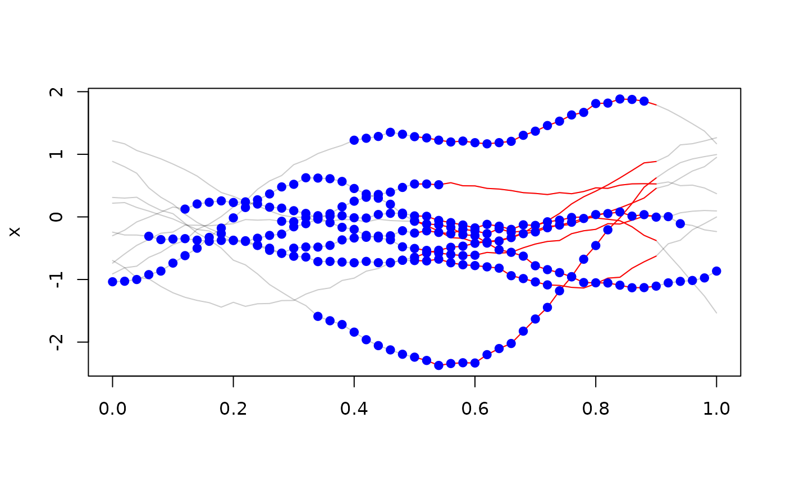

These are used to redefine or restrict the domain of tf objects.
a tf-object
numeric vector of length 1 or length(f).
Defaults to the lower limit of the domain of f.
numeric vector of length 1 or length(f).
Defaults to the upper limit of the domain of f.
not used
an object like f on a new domain (potentially).
Note that regular functional data and functions in basis representation will
be turned into irregular tfd-objects iff begin or end are not scalar.
(x <- tf_rgp(10))
#> tfd[10] on (0,1) based on 51 evaluations each
#> interpolation by tf_approx_linear
#> [1]: (0.00, -1);(0.02, -1);(0.04, -1); ...
#> [2]: (0.00,-0.24);(0.02,-0.29);(0.04,-0.29); ...
#> [3]: (0.00,-0.30);(0.02,-0.21);(0.04,-0.08); ...
#> [4]: (0.00, 0.89);(0.02, 0.80);(0.04, 0.70); ...
#> [5]: (0.00, 0.22);(0.02, 0.23);(0.04, 0.15); ...
#> [6]: (0.00,-0.74);(0.02,-0.59);(0.04,-0.45); ...
#> [7]: (0.00, 0.31);(0.02, 0.30);(0.04, 0.31); ...
#> [8]: (0.00,-0.91);(0.02,-0.81);(0.04,-0.79); ...
#> [9]: (0.00,-0.70);(0.02,-0.81);(0.04,-0.97); ...
#> [10]: (0.00, 1.2);(0.02, 1.2);(0.04, 1.1); ...
plot(x)
tf_zoom(x, .5, .9)
#> tfd[10] on (0.5,0.9) based on 21 evaluations each
#> interpolation by tf_approx_linear
#> [1]: (0.50, -0.062);(0.52, -0.141);(0.54, -0.226); ...
#> [2]: (0.50, 0.53);(0.52, 0.53);(0.54, 0.51); ...
#> [3]: (0.50, -0.50);(0.52, -0.54);(0.54, -0.58); ...
#> [4]: (0.50, -0.26);(0.52, -0.22);(0.54, -0.25); ...
#> [5]: (0.50, -0.70);(0.52, -0.70);(0.54, -0.67); ...
#> [6]: (0.50, 0.0160);(0.52, 0.0098);(0.54,-0.0569); ...
#> [7]: (0.50, -2.2);(0.52, -2.3);(0.54, -2.4); ...
#> [8]: (0.50, 1.3);(0.52, 1.3);(0.54, 1.2); ...
#> [9]: (0.50, -0.64);(0.52, -0.58);(0.54, -0.53); ...
#> [10]: (0.50, -0.07);(0.52, -0.11);(0.54, -0.13); ...
lines(tf_zoom(x, .5, .9), col = "red")
points(tf_zoom(x, seq(0, .5, l = 10), seq(.5, 1, l = 10)), col = "blue")
